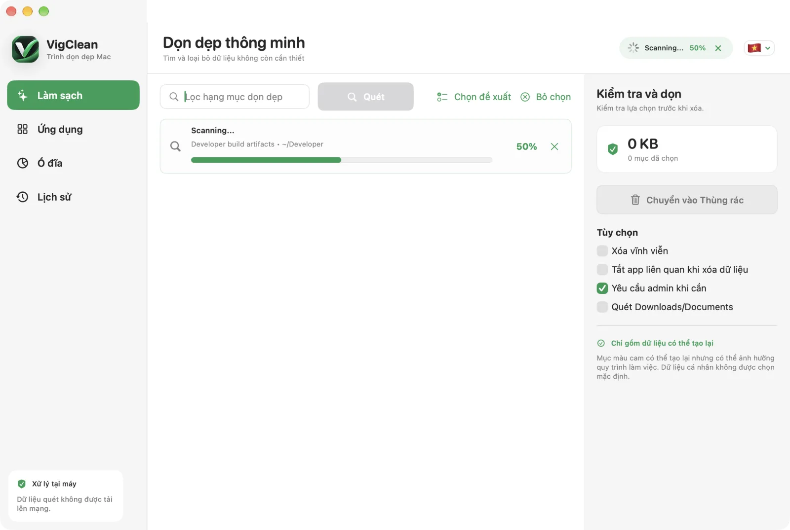
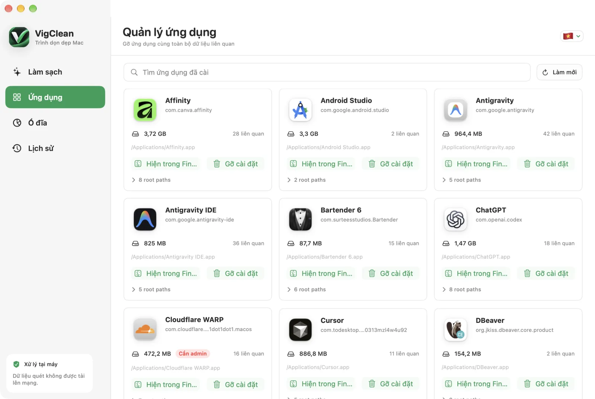
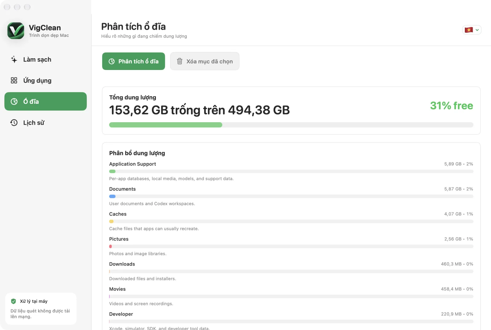

Tải bản phát hành
Mở trang GitHub Releases và tải tệp DMG phù hợp.
Hướng dẫn chính thức
Quét, xem lại và giải phóng dung lượng trên macOS với tiến trình trực quan và lớp bảo vệ nhiều tầng.

Xử lý tại máy
Chuyển vào Thùng rác mặc định
Kiểm tra cập nhật tự động
Tải bản Universal nếu bạn không chắc máy dùng Apple Silicon hay Intel.
Mở trang GitHub Releases và tải tệp DMG phù hợp.
Mở DMG, kéo VigClean vào thư mục Applications, sau đó khởi chạy.
macOS chỉ hỏi quyền khi VigClean cần đọc hoặc xóa vị trí được bảo vệ.
Mỗi khu vực giải quyết một công việc riêng để bạn không phải đoán nút nào sẽ tác động đến dữ liệu nào.
Bấm Quét, theo dõi đường dẫn hiện tại và phần trăm hoàn thành. Có thể hủy bất cứ lúc nào mà không thay đổi tệp.
VigClean tìm app cùng cache, tùy chọn, container, log và dữ liệu hỗ trợ liên quan. Mở cây đường dẫn để xem trước từng mục.

Phân tích dung lượng theo nhóm, xem thư mục lớn và đọc khuyến nghị trước khi chọn bất kỳ dữ liệu nào.

Mọi đường dẫn đều được xác thực trước khi xóa thường và được kiểm tra lại trước thao tác cần quyền quản trị.
Khôi phục được nếu đổi ý. Xóa vĩnh viễn phải được bật rõ ràng.
Đánh dấu thư mục quan trọng để loại khỏi lựa chọn và mọi thao tác xóa.
Xem dữ liệu đã xử lý, dung lượng thực tế thu hồi, số mục và lỗi của mỗi lần chạy.
VigClean kiểm tra GitHub Releases mỗi ngày. Bản cập nhật được xác minh bằng chữ ký EdDSA trước khi giải nén và cài đặt.